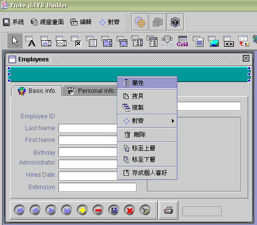
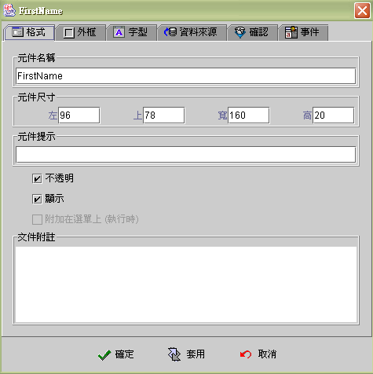
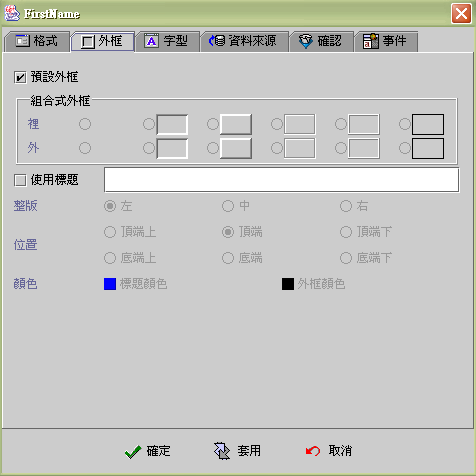
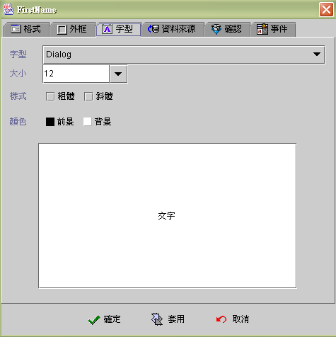

|

元件共同屬性設定 (common properties)
格式 (format)
外框 (border)
字型 (font)
開啟元件的屬性設定有兩種方式，可以用滑鼠雙擊元件，或移到目標元件，按下滑鼠右鍵，選擇【屬性】。

格式 (format)
-
元件名稱 (component name)：元件名稱，命名不可以和其他元件重複，建議以英文命名且須遵循
Java™ 變數 (variable) 命名法則 (naming rule)。元件名稱
(component name)
參照、使用於下述系統中，當元件名稱更改後，運算公式元件的內含值
{元件名稱} 會自動更新，但 SetProp("元件名稱",
"屬性", "值")
以文字串指名的元件名稱參照不會更動，設計師必須自行維護更新。
-
jLIVE Builder™
產生的 Java™ 原始程式碼：Java™ 物件變數名稱
(object
Name)，例如：zEdit 元件名稱 = new
zEdit(); 。
運算公式
(formula) 的元件內含值：{元件名稱}。 運算公式
(formula) 的元件名稱參照：SetProp("元件名稱",
"屬性", "值")。
-
元件尺寸 (size)：元件位置及大小。
-
元件提示 (tips)：當滑鼠移到元件時，顯示的提示文字。多行或特殊文字可以輸入 HTML 標記
(tag)文字。
-
不透明 (opaque)：元件背景 (background)
以背景顏色顯示。
-
顯示 (visible)：元件顯示或隱藏。
-
附加在選單上 (append to menu)：
執行時將元件安置於選單 (menu) 上。

▲Top
外框 (border)
-
預設外框 (default)：預設為 Java™
Swing set 的元件外框，取消核取 (unchecked)，即可使用組合式外框。
-
組合式外框 (compound border)：設定裡
(inner) 外 (outer) 的外框模式。
-
使用標題外框 (titled border)：加上標題外框。

▲Top
字型 (font)

▲Top
Copyright © 2001~
2004 Probe Technology . All Rights Reserved.
Questions, comments,
and suggestions to Service@probe.com.tw
|